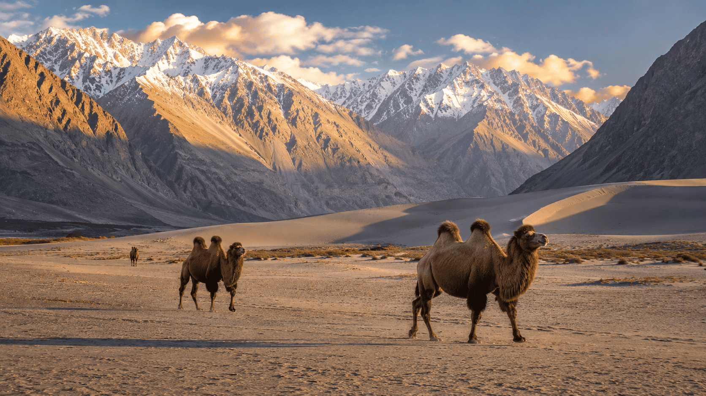
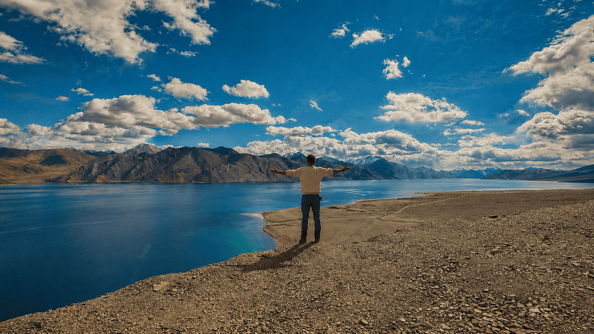
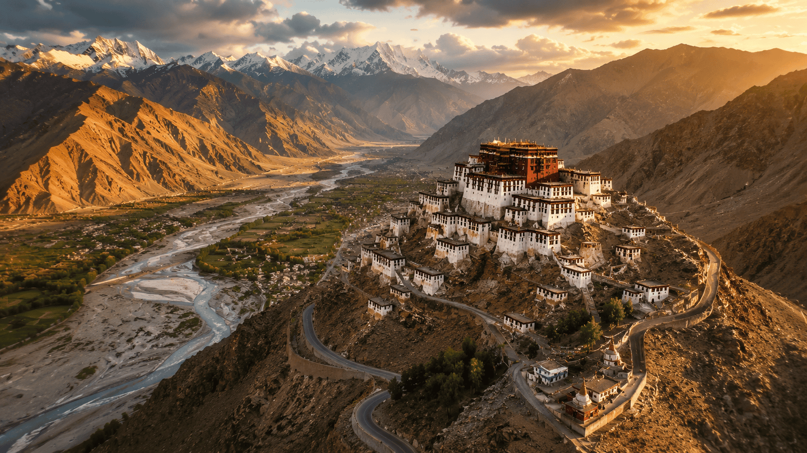

You land at Leh Airport at 3,524 metres and everything feels slightly unreal. The air is thin. The mountains are enormous. The sky is a shade of blue that has no name in English.
This template turns a practical itinerary into a Travel & Kashmir journal post: useful enough to plan from, slow enough to read, and visual enough to feel like the trip before the reader enquires.
Rest first. Explore only if your body agrees.
Your body needs 48 hours to adjust to Ladakh's altitude. This is not optional advice; it is physiology. Check into your hotel, drink water, avoid alcohol, and do almost nothing until late afternoon.
If you feel steady, walk slowly up to Leh Palace. At sunset, take a local auto-rickshaw to Shanti Stupa and watch the old town turn amber below you.
Monasteries, rivers and the permit rhythm.
Start with the Hall of Fame Museum, then Spituk Gompa above the Indus. Continue to Magnetic Hill and the Sangam viewpoint, where the Zanskar and Indus meet in two distinct colours.
Collect your Inner Line Permits before the high-road days begin. In the evening, walk the Tibetan Market and keep dinner simple.
Over Khardung La into the high desert.
Leave Leh by 7 a.m. The first hour winds through increasingly bare mountain terrain toward Khardung La. Stop briefly at the top, take the photograph, then descend.

The drop into Nubra is one of the great drives in Asia. By late afternoon, the white dunes of Hunder sit between dark mountains and a sky that looks sharpened.
The Balti village at the edge of the map.
Turtuk was part of Pakistan until 1971 and opened to visitors only in 2009. The architecture, food and language change in ways that make the previous valleys feel suddenly far away.
Walk without a fixed agenda. Visit the small local museum, buy apricot jam, and leave early enough to return before dark.
The Shyok road to the lake that changes colour.
The road from Nubra to Pangong via Shyok follows eroded cliffs, braided riverbeds and occasional nomad encampments. The first glimpse of Pangong Tso still lands like a physical event.

Sunrise, Chang La and Thiksey by afternoon.
Set an alarm for 5 a.m. Sunrise at Pangong is all water, mountains and light arriving in stages. Leave by 8 a.m. and return to Leh via Chang La.

One last slow walk before the morning flight.
If your flight leaves later, walk the Old Town lanes behind Leh Palace before the shops fully wake. Look for Ladakhi silver, apricot products and the kind of quiet that does not photograph well.
Practical notes, kept close to the story.
Permits
Nubra Valley and Pangong Lake require Inner Line Permits. Carry photocopies; checkpoints are part of the route.
Acclimatisation
Do not skip the first two gentle days. If severe altitude symptoms appear, descend immediately.
Season
Mid-May through September is the useful window. June and September usually balance weather and crowds best.
Budget
Expect roughly ₹35,000-55,000 per person excluding international flights for a mid-range private route.
Want us to run this route for you?
We handle the permits, driver, stays and pacing so you can arrive in Leh and let the road do its work.
Plan this trip →